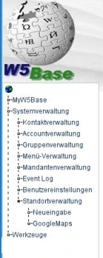
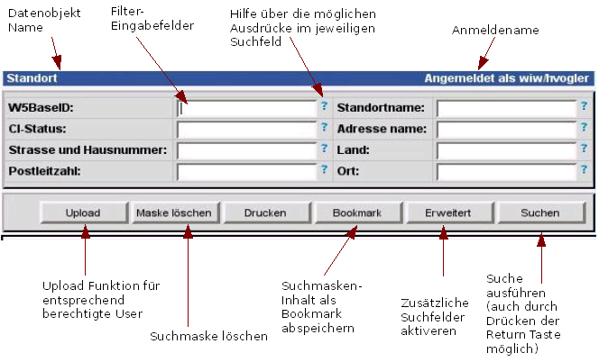
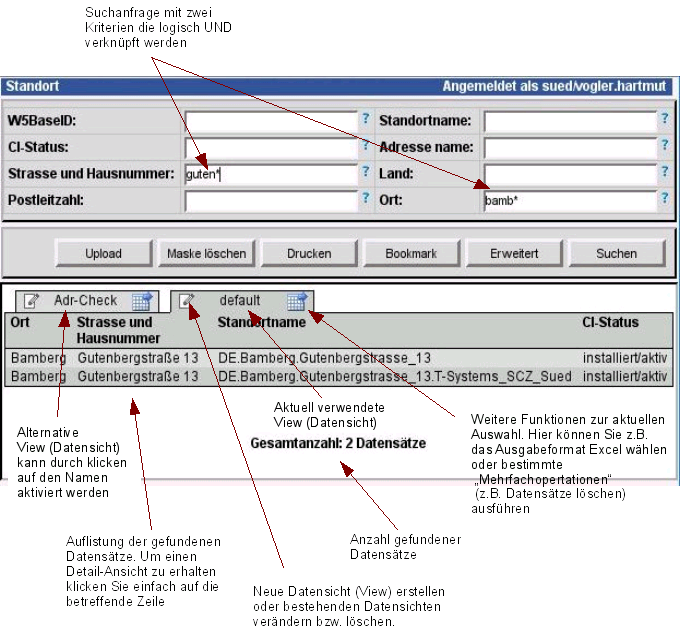
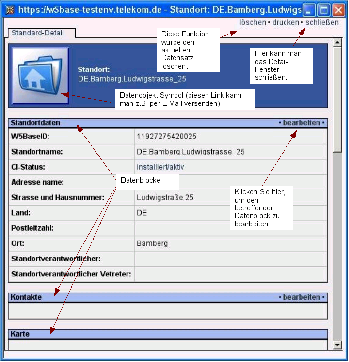
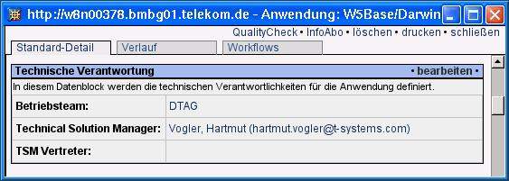
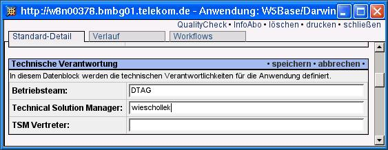
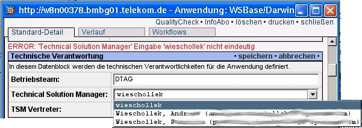
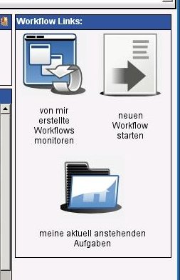
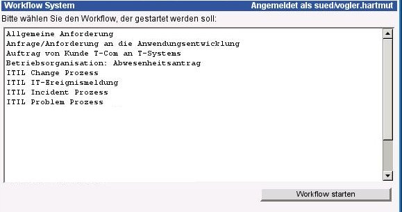
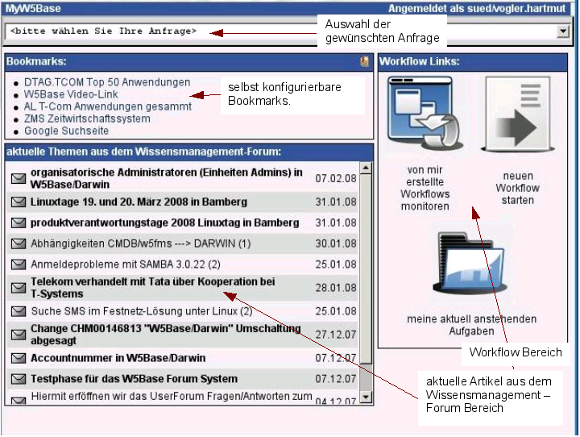

W5Base Referenzhandbuch
|
Stand: |

Allgemeine Handhabung
Alle Funktionen des W5Base/Frameworks, die Ihnen als User zugänglich sind, erreichen Sie über das Menü am linken Rand des Fensters. Das Menü passt sich automatische Ihren Berechtigungen an, d.h. Sie bekommen immer nur die Menüpunkte angezeigt, die Sie auch ausführen dürfen.
|
In
diesem Menü befindet sich immer der Menüpunkt
„MyW5Base“ über den Sie die Workflow-Funktionen
und ihre persönlichen Content-Pages abrufen können.
Tip:
Durch klicken auf die
Weltkugel im Menü, kann man das Menü ein und
ausschalten, wodurch der Arbeitsbereich vergrößert
werden kann. |
 |
In den Menüs wird das jeweils aktuell angezeigte Modul mit einem roten Punkt markiert.
Tip:
Sie können bei jedem
Menüeintrag mit der rechten Maustaste (Link-Adresse
kopieren/Verknüpfung kopieren) die Adresse (URL) des
Menüpuntes in die Zwischenablage kopieren. Dies kann man dann
z.B. in E-Mails verwenden.
Config Management
Unter dem Oberbegriff „Config-Management“ sind in der W5Base alle Funktionen zusammengefasst, die sich um das Abfrage, Erzeugen und Pflegen von Tabellen kümmern.
In erster Linie werden im Config-Management (CFM) reale Objekte verwaltet wie z.B. Standorte, User, Gruppen und ähnliches. Allgemein sind die Config-Objekte relativ statisch, d.h. ein Datensatz muss von dem Verantwortlichen nicht täglich geändert werden (was nicht heißt, dass dies nicht möglich ist).
Alle Config-Datensätzte werden im Folgenden auch als Config-Items (CI's) bezeichnet.
Suchmasken
In den Suchmasken ist es möglich div. Filtermöglichkeiten zu nutzen, um die gewünschten Daten anzuzeigen.

Ein
sehr einfacher Filter wäre z.B. ab* - was zur Folge hätte,
dass alle Datensätze aufgelistet werden würden, die im
betreffenden Feld einen Inhalt hätten, der mit „ab“
beginnt. Weitere Informationen zu den verfügbaren Möglichkeiten
von Filtern erhalten Sie, wenn Sie auf das Fragezeichen hinter dem
jeweiligen Suchfeld klicken.
Suchergebnisse
Die Ergebnisse einer Suche können in verschiedenen Formaten dargestellt werden. Im Normalfall wird die die HTML Ansicht direkt im Browser sein:

Eine
Datensicht (View) ist eine Zusammenstellung von Datenfeldern. Die
Sortierung der Datensätze wird (so weit dies bei den Daten
möglich ist) durch die Reihenfolge der Felder vorgegeben.
Detail-Ansicht
Die Detail-Ansicht (Standard-Detail) ist gleichzeitig die Oberfläche in der die Config-Daten bearbeitet werden können (wenn man die notwendigen Berechtigungen besitzt).

Bearbeiten von Config-Daten
Im Beispiel soll z.B. der „Technical Solution Manager“ geändert werden. Bei Feldern, die eine Verknüpfung zu anderen Elementen darstellen, kann diese einfach durch Eingabe eines Teils der Bezeichnung des Elementes eingetragen werden, zu dem Verknüpft werden soll.
Klicken Sie also auf „Bearbeiten“ im betreffenden Datenblock:

Geben Sie dann z.B. den Nachnamen (oder einen Teil davon) des Kontaktes ein, zu dem Verknpnüpft werden soll und klicken Sie dann auf „speichern“:

Sie erhalten nun die Information, dass die Auswahl noch nicht eindeutig ist. In diesem Fall wird eine Auswahlbox angezeigt. In dieser können Sie nun den gewünschten Kontakt auswählen. Klicken Sie dann auf „speichern“ - dann wird der Kontakt verknüpft.

Workflow Engine
Workflows sind in der W5Base ganz allgemeine alle Vorgänge, die irgenwann beginnen und irgenwann beendet sind.
|
Die Haupteinsprungspunkte zur Wokrflow-Engine erreichen Sie über den Menüpunkt „MyW5Base“.
Unter „meine aktuell anstehenden Aufgaben“ werden alle Workflows aufgelistet, die Ihnen zugewiesen wurden – oder in denen Sie Aufgaben zu erfüllen haben.
Unter „von mir erstellt Workflows monitoren“ werden alle von Ihnen initiierten Worflows aufgelistet – solange diese noch nicht beendet sind.
Schließlich können Sie mit „neuen Workflow starten“ beliebige Workflows starten.
|
 |
Wählen Sie das Icon „neuen Workflow starten“ aus, so erhalten Sie eine Übersicht, der von Ihnen startbaren Workflows. Die aufgeführten Workflows können in Abhängikeit zu Ihren Rechten und Rollen differieren.

Wählen
Sie nun den jeweiligen Workflow aus, und klicken Sie dann auf
„Workflow starten“. Die weitere Bearbeitung der
Workflows ist sehr abhängig vom jeweiligen Workflow und kann an
dieser Stelle nicht beschrieben werden.
MyW5Base
Durch klicken auf den Menüpunkt „MyW5Base“ erhalten sie ihre personalisierbare Einstiegsseite in die W5Base angezeigt.

Der
Bookmark-Bereich wird nur angezeigt, wenn der aktuell angemeldete
User auch Bookmarks gespeichert hat. Sollte dies nicht der Fall
sein, so wird der Block einfach ausgeblendet.
Im Oberen Teil der
Maske können Sie aus verschiedenen Abfragen auswählen.
Diese werden individuell nach Ihren Rechten und Gruppenrollen
zusammengestellt.
Im Rechten Teil sind die Haupteinsprungspunkte
zur Workflow-Engine zu finden. Hier können z.B. Anforderungen
erzeugt oder bearbeitet werden.
Die aktuellste Version der W5Base erhalten Sie über SubVersion direkt vom SourceForge Repository. Um sich diese Programmcodes auf dem eigenen System zu installieren benötigen Sie also SubVersion.
Ist SubVersion auf Ihrem Unix-System installiert, so können Sie mit dem folgenden Kommandos den Programmcode downladen:
cd /opt
svn co https://w5base.svn.sourceforge.net/svnroot/w5base w5base
Es ist dringend zu empfehlen, den W5Base Programmcode wie im Beispiel unter /opt/w5base zu installieren (alle weiteren Beispiele gehen davon aus, dass dies der Fall ist). Andere Varianten wären zwar auch möglich, können aber u.U. kleinere Anpassungen im Programmode notwendig machen.
Da die W5Base div. Perl Module nutzt, ist es ratsam das InstallCheck Tool zu nutzen:
/opt/w5base/sbin/W5InstallCheck
Mit diesem Tool werden alle notwendigen Module auf Ihre Existenz und Funktionsfähigkeit geprüft.
Config-Dateien
W5Base Konfiguration
Apache Konfiguration
Quality-Checks
Bei der Administration der Quality-Check Regeln ist zu beachten, das
eine Regel nicht für den gleichen Mandanten über mehere
Objekt-Ableitungen aktiviert wird.
z.B. Wenn eine Regel „xxx“
für den Mandanten „hans“ sowohl im Objekt
„itil::appl“ und im Objekt „OSY::appl“
aktiviert wird. Dies hätte den Effekt, dass die jeweiligen
Datenverantworktlichen aus zwei Objekt-Klassen die gleichen
Meldungen doppelt erhalten würden.
Entwicklervorgaben
Modulare Struktur
Event-Handling und W5Server
Dokumentation
Die Original Version des Handbuches wird als OpenOffice Dokument min. Version 2.3.1 geführt. Von dieser Version wird sowohl ein HTML als auch PDF Export nach Änderungen ins Repositiory auf SourceForge geschrieben.
Die Links auf die jeweils aktuellsten Versionen dieses Dokumentes lauten:
PDF: Handbook.pdf
HTML: Handbook.html
OpenOffice: Handbook.odt
Inhaltsverzeichnis
1 Allgemeine Handhabung 2
1.1 Config Management 3
1.1.1 Suchmasken 3
1.1.2 Suchergebnisse 4
1.1.3 Detail-Ansicht 5
1.2 Workflow Engine 6
1.3 MyW5Base 7
2 Administrationshinweise 7
2.1 Installation 7
2.2 Config-Dateien 7
2.2.1 W5Base Konfiguration 7
2.2.2 Apache Konfiguration 7
3 Entwicklervorgaben 7
3.1 Modulare Struktur 8
3.2 Event-Handling und W5Server 8
4 Dokumentation 8